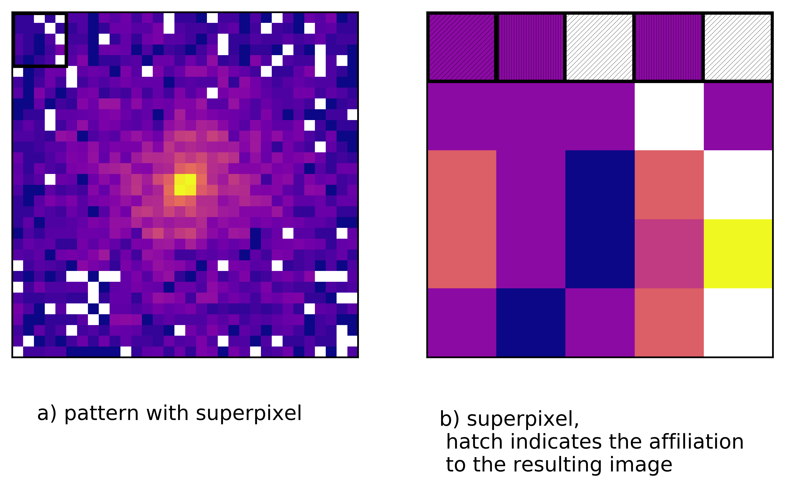

Description of Nutcracker¶
The following section trys to give a basic understanding of the Nutcracker package. Futhermore some mathematical convetions are uesed. Vectors are denoted in bold letters. If just one componend of a vector is used, the related position in the vector is given as a footnote.
Intensities module¶
The main features of this module are the Fourier-Shell-Correlation (3D), respectively the Fourier-Ring-Correlation (2D) and the Q-factor calculation. The side feature, the split image function, allows to split up one pattern or volume in two, to raise the opporunity to perform comparative image analysis on just one pattern/volume.
Fourier-Shell/Ring-Correlation¶
The Fourier-Shell-Correlation (FSC) first introduced by Harauz and van Heel in 1986, is the 3 dimensional extention of the Fourier-Ring-Correlation (FRC). It basicly describes the similarity of two Fourier-Transforms \(F_{1}(\textbf{k})\) and \(F_{2}(\textbf{k})\), with \(\textbf{k}\) as spatial frequency vector. It starts at low spatial frequency with perfect correlation 1 and drops for increasing frequency. Usually the threshold for the resolution determination is \(\frac{1}{e}\). The purpose of this function is to calculate the resolution between two Fourier-Transforms.
Q-factor¶
The Q-factor is calculated over a set of \(n\) patterns and describes the ratio of the length of the Fourier-Transforms sum and the length of each Fourier-Transforms. The result is a 2D map which shows the clarity of the signal. This function is a fast and simple method to estimate the signal to noise ratio.
Split image function¶
This function raises the opportunity to perform e.g. a FRC on a single pattern. The image or volume is splitted by creating superpixels in which single pixels are summed up in order or randomly according to the two resulting images. Thats conserve the number of scattered photons respectively the information of the actual input.
Quaternions module¶
Quaternions are 4 dimensional complex number, with a scalar part \(w\) and a vector part \([x,y,z]\). The scalar part describes also the real part and the vector the imaginary part of the complex number. Additionally the three components of the imaginary part are multiplied by \(i\), \(j\) and \(k\). Quaternions can be denoted as
The scalar or inner product in quaternion space is defined as
This leads to an enclosed angle
\(q_{r}\) stands for the relative quaternion, where \(\textbf{q}_{r}\) denotes the vector part and \(q_{r,0}\) the scalar part. The relative quaternion, meaning the rotation between two quaternions can be obtained by
In this expression the \(\cdot\) means the quaternion multiplikation.
Quaternions can be used to describe an intuitive way of rotations. Nonetheless one should take the ambiguity \(q = -q\) into account.
The two following ways of comparing sets of quaternions originate from [Ekeberg et al., in progress].
Compare two sets of quaternions¶
This function takes two sets of quaternions and pickes randomly quaternions within each set. By calculating now the relative quaternion between the two samples and the corresponding rotaion angle, the result is a distribution of the enclosed angle and shows how well the sets are correlating with each other. For more analysis one can look on the z-score or the percentage of the quaternions in a given standard deviation \(\sigma\).
Global quaternion rotation between two sets¶
This method gives the global rotation in form of a quaternion between the two sets. The result could than be used to realign the two sets or a corresponding model. At first, as in the method before, the relative quaternion is calculated, but now between each quaternion from the two sets. The mean of this relative quaternions lead to the global quaternion. To verify that the global roation is right, the enclosed angles between the global quaternion and the quaternions of one set are calculated. For a perfect correlaction between the two sets of quaternions the angular error is 0.
Real-space module¶
The real-space module uses spimage functions to calcualte the Phase-Retrieval-Transfer-Function (PRTF). Additionally it could also apply a radial average to get a 1D PRTF.
Submodules¶
Rotate¶
Key feature of the rotate submodule is the find-rotation function. This function aligns two models by applying a rotation matrix and trys to find the global minimum of the error between the two models. Thereby could three differnt methods be used:
- brute-force algorithm
- minimise function with the limited memory Broyden–Fletcher–Goldfarb–Shanno bound constraint algorithm
- differential evolution
Following points are recommended to think about to align the models succesfully:
- If the rotational difference between the models is not to great the minimise function can be used. Since the minimise function is quite sensitiv and less robust, it might be that it will stuck in a local minimum and a flase solution is found. A big advantage of this function is the very little amount of time and computational power that is required.
- If the rotational difference is obviously big or the minimise function failed one should think about using the differntial evolution method instead. Important to know is that this function bases on a stochastic population method. It can be recommend to run this function several times and store the results. After that the could take the mean and should get a decent final result. This solution one could than give to the minimise function to refine the result.
- The most robust, but also the most slow way to perform the alignment is by using the brute force function. The amount of time depends mainly on the size of the models and the size of the search grid. To increase the speed one could crop the models if possible. Another possibility to speed up the brute force is to run it with the multiprocessed brute force function which is also provided by Nutcracker.
Shift¶
The find-shift function is the counterpart of the find-rotation function, since the rotation is conserved in fourier-/intensity-space for a fully alignt model one has to also find the right shift in real-space. Therefor the user has following method available:
- brute-force algorithm
- minimise function with the limited memory Broyden–Fletcher–Goldfarb–Shanno bound constraint algorithm
The same points as for the find-rotation function should be considered.
Plot-analysis¶
This submodule contains the envelope function which calcualtes the higher as well as the lower envelope. The envelopes are calculated by interpolating between turning points in a given interval. The interval is defined by the sample frequence. The envelope function also has a peak finding key, so that peaks over or under a certain threshold are not take into account when calculating the envelope.
Error matrix multiprocessed¶
Due to the fact that a brute force algorithm requries a lot of time and computational power this class provides an option to decrease the runtime. Currently this class covers just the rotation finding. With multiprocessing the brute force algorithm search grid is dived into chuncks. The size of the chuncks is defined by the user. The number of chuncks leads to the number of processes. Each process will run a brute force algorithm with the chunck as new search grid. After all one can reassemble the resulting error matrix.